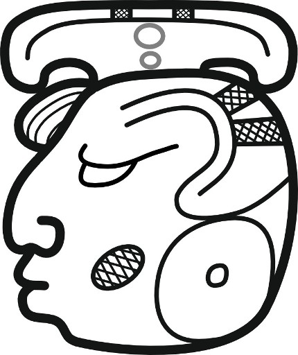

K'UH
God or deity · Graph 32mt
Save individual imageResearch v2 ONLY. These are training-catalogue reference images for a smoke test, not independent examples that prove recognition accuracy.
God or deity · Graph 32mt
Save individual image
Resplendent or sunny · Graph 184vb
Save individual image
Deity name · Graph 291va
Save individual image
First or house · Graph 4va
Save individual image
Cloud or mist · Graph 44bb
Save individual image